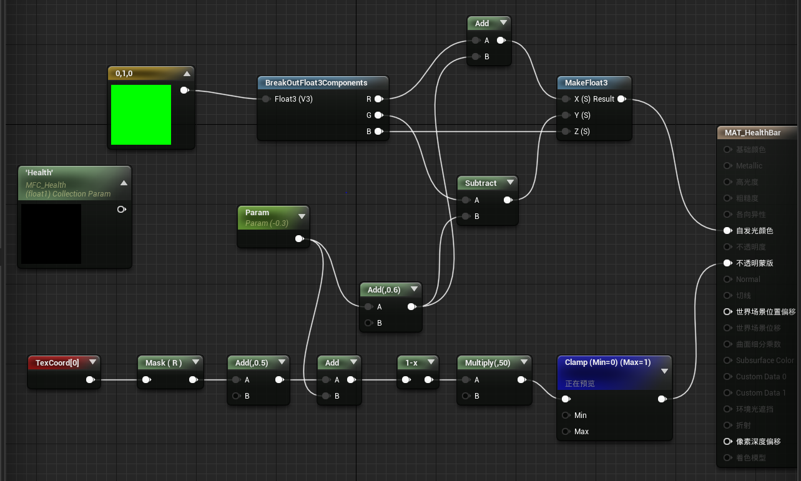

继续学习 ue4~ 这两天根据 3D HealthBar 这个视频实现了 3D 的血条，记录下过程。
# 1. 实现过程
这个血条实现的教程主要是 3 个部分：
# i.mesh
3d 血条的半圆环 mesh，这个是直接导入的素材，设置如下：
# ii.material

血条的 material 是使用材料蓝图实现的，大致思路是使用 TextCoord 实现蒙版的公式，对横坐标的计算公式为
f(x) = clamp[0,1]((1 - (x + 0.5 + param)) * 50)
函数结果大致可以看作 x<0.5-param 时，返回 1，x>=0.5-param 时，返回 0，通过调整 param 从 - 0.5 到 0.5，便可以实现血条长度从 100% 到 0%，使用变量 health 换算至对应 param 就可以实现对血条长度的控制。
颜色则也是通过 param 控制的。param 约小，血条越长，因此 RGB 中的 G 需要越大，R 需要越小，G 值时 G-param，R 值是 R+param，再将 param+0.6 修正初始值便得到了颜色公式。
最后新建材质参数集 MFC_Health，代替 param，并新建材质实例应用到 mesh 上。
# iii.pawn
最后一部分是将血条绑定至游戏角色上，并将 hp 百分比值通过公式由 100 至 0 线性换算成对应的 - 0.5 至 0.5 的 param。上图是实现了 AdjustHealthBar 的函数，将 hp 百分比通过公式计算 param：
param = -hp / 100 + 0.5
实现函数后，通过键入 Q 和 E 调整 Health 的值输入 AdjustHealthBar 进行测试。
按教程实现后，效果如下：

发现血条是从右边起的，因为教程中的血条是放在主角前方的，在我们这个视角中看起来就反过来了，因此需要修改下公式。
# iv. 修改
修改材质：
蒙版的 UV 公式需要反过来：
f(x) = clamp[0,1]((1 - (x + 0.5 + param)) * 50)
=>
f(x) = clamp[0,1]((x - 0.5 + param)) * 50)
因此修改后蓝图变为：
修改 AdjustHealthBar 函数：
由于公式正负值反了过来，param 和 health 的线性关系正负值也需要反过来：

# 2. 最终效果
最终实现的效果大致如下：
初始时为一个半圆弧，颜色是绿色。
随着血量降低，圆弧长度较少，颜色逐渐偏黄，最后变红。